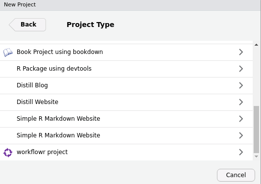

Reproducible research with workflowr
workflowr version 1.6.0
John Blischak
2019-12-18
Source:vignettes/wflow-09-workshop.Rmd
wflow-09-workshop.RmdIntroduction
The workflowr R package makes it easier for you to organize, reproduce, and share your data analyses. This short tutorial will introduce you to the workflowr framework. You will create a workflowr project that implements a small data analysis in R, and by the end you will have a working website that you can use to share your work. If you are completing this tutorial as part of a live workshop, please follow the setup instructions in the next section prior to arriving.
Workflowr combines literate programming with R Markdown and version control with Git to generate a website containing time-stamped, versioned, and documented results. By the end of this tutorial, you will have a website hosted on GitHub Pages that contains the results of a reproducible statistical analysis.
Setup
To minimize the possibility of any potential issues with your computational setup, you are encouraged to update your version of RStudio (Help -> Check for Updates) and update your R packages:
If you do encounter any issues during the tutorial, consult the Troubleshooting section for solutions to the most common problems.
Organize your research
To help you stay organized, workflowr creates a project directory with the necessary configuration files as well as subdirectories for saving data and other project files. This tutorial uses the RStudio project template for workflowr, but note that the same can be achieved via the function wflow_start().
To start your workflowr project, follow these steps:
Open RStudio.
-
In the R console, run
wflow_git_config()to register your name and email with Git. This only has to be done once per computer. If you’ve used Git on this machine before, you can skip this step. For a better GitHub experience, use the same email you used to register your GitHub account. In the menu bar, choose
File->New Project.-
Choose
New Directoryand then scroll down the list of project types to selectworkflowr project. If you don’t see the workflowr project template, go to Troubleshooting.

-
Type
myprojectas the directory name, choose where to save it on your computer, and chooseCreate Project.
-
RStudio executed
wflow_start()to create the workflowr projectmyprojectand opened the project in RStudio. Note the workflowr directory structure in the Files pane.myproject/ |-- .gitignore |-- .Rprofile |-- _workflowr.yml |-- analysis/ | |-- about.Rmd | |-- index.Rmd | |-- license.Rmd | |-- _site.yml |-- code/ | |-- README.md |-- data/ | |-- README.md |-- docs/ |-- myproject.Rproj |-- output/ | |-- README.md |-- README.mdThe most important directory for you to pay attention to now is the
analysis/directory. This is where you should store all your analyses as R Markdown (Rmd) files. Other directories created for your convenience includedata/for storing data, andcode/for storing long-running or supplemental code you don’t want to include in an Rmd file. Note that thedocs/directory is where the website HTML files will be created and stored by workflowr, and should not be edited by the user. -
In the R console, run
getwd()to return the current working directory. Note that it is set to the location of the workflowr project on your computer. Every time you open this RStudio project (e.g. by clicking onmyproject.Rproj), it will change the working directory (as well as the Files pane) to this directory. This allows you to use relative paths to files when performing your analysis, which will make it easier for you and others to run the code on other machines. In other words, instead of writing an absolute path like:Instead you can write a relative path that will work for any user on any operating system:
Open the file
analysis/index.Rmdfor editing. It should already be open in the RStudio Editor pane from when you created the project. If not, use the Files pane to navigate to the directoryanalysis/and click onindex.Rmdto open it for editing. This index file is special because it is used to create the home page for your project. Write a short introductory message, e.g. “Welcome to my first workflowr website”, and then save the file.In the R console, run
wflow_build(). This will build all the R Markdown files inanalysis/1, save them indocs/, and then opendocs/index.htmlin the RStudio Viewer pane. Ignore the warnings in the workflowr report for now; we will return to these later.-
To begin your analysis, you will use a built-in data set from R.2 The data set
ToothGrowthcontains the length of the teeth for 60 guinea pigs given 3 different doses of vitamin C either via orange juice (OC) or directly with ascorbic acid (VC). To explore the data set, run the following in the R console.## len supp dose ## Min. : 4.20 OJ:30 Min. :0.500 ## 1st Qu.:13.07 VC:30 1st Qu.:0.500 ## Median :19.25 Median :1.000 ## Mean :18.81 Mean :1.167 ## 3rd Qu.:25.27 3rd Qu.:2.000 ## Max. :33.90 Max. :2.000## 'data.frame': 60 obs. of 3 variables: ## $ len : num 4.2 11.5 7.3 5.8 6.4 10 11.2 11.2 5.2 7 ... ## $ supp: Factor w/ 2 levels "OJ","VC": 2 2 2 2 2 2 2 2 2 2 ... ## $ dose: num 0.5 0.5 0.5 0.5 0.5 0.5 0.5 0.5 0.5 0.5 ... -
To mimic a real project that will have external data files, save the
ToothGrowthdata set to thedata/subdirectory usingwrite.csv().
Create reproducible analyses
To demonstrate the reproducibility features of workflowr, you will perform a small analysis.
-
In the R console, open a new R Markdown file with
wflow_open(). It will open automatically for editing in RStudio.Rmd files allow you to mix text, code, and results in the same output document (which can be HTML, PDF, Word, and more). In order to accomplish this, it uses a specific layout and syntax. At the top of the document between the dashes
---is the YAML3 header that contains metadata about the document such as the title. Code chunks4 are specified using the syntax below:```{r optional-chunk-name} <code goes here> ```And the code chunks are executed in order from top to bottom. Any text outside of a code chunk is interpreted as prose that should not be executed as R code.
The workflowr framework accepts any valid Rmd file that can be converted to HTML. In the YAML header, note that workflowr provides its own custom output format,
workflowr::wflow_html. This function extends the default output formathtml_documentfrom the rmarkdown package, and thus accepts all the same arguments. The only other minor difference is thatwflow_open()adds the editor optionchunk_output_type: console, which causes the code to be executed in the R console instead of within the document. If you’d prefer the results of the code chunks be embedded inside the document while you perform the analysis, you can delete those lines (note that this has no effect on the final results, only on the display within RStudio). -
Copy the code chunk below and paste it at the bottom of the file
teeth.Rmd. The code imports the data set from the file you previously created5. Execute the code in the R console by clicking on the Run button or using the shortcutCtrl/CMD+Enter.```{r import-teeth} teeth <- read.csv("data/teeth.csv", row.names = 1) head(teeth) ```Note: if you copy and paste this chunk, make sure to remove any spaces before each of the backticks (
```) so that they will be correctly recognized as indicating the beginning and end of a code chunk. -
Next create some boxplots to explore the data. Copy the code chunk below and paste it at the bottom of the file
teeth.Rmd. Execute the code to see create the plots.```{r boxplots} boxplot(len ~ dose, data = teeth) boxplot(len ~ supp, data = teeth) boxplot(len ~ dose + supp, data = teeth) ``` -
To compare the tooth length of the guinea pigs given orange juice versus those given vitamin C, you could perform a permutation-based statistical test. This involves comparing the observed difference in teeth length due to the supplement method to the observed differences calculated from random permutations of the data. The basic idea is that if the observed difference is an outlier compared to the differences generated after permuting the supplement method column, it is more likely to be a true signal not due to chance alone. Copy the code chunk below, paste it at the bottom of of the file
teeth.Rmd, and execute it. It demonstrates the idea of a permutation6:```{r permute} # Observed difference in teeth length due to supplement method mean(teeth$len[teeth$supp == "OJ"]) - mean(teeth$len[teeth$supp == "VC"]) # Permute the observations supp_perm <- sample(teeth$supp) # Calculate mean difference in permuted data mean(teeth$len[supp_perm == "OJ"]) - mean(teeth$len[supp_perm == "VC"]) ``` In the R console, run
wflow_build(). Note the value of the observed difference in the permuted data.-
In RStudio, click on the Knit button. Has the value of the observed difference in the permuted data changed? It should be identical. This is because workflowr always sets the same seed prior to running the analysis.7 To better understand this behavior as well as the other reproducibility safeguards and checks that workflowr performs for each analysis, click on the workflowr button at the top and select the “Checks” tab.

-
Navigate back to the file
analysis/index.Rmd. If you closed it, you can open it from the Files pane or run the following in the R console: -
Copy the line below and paste it at the bottom of the file
analysis/index.Rmd. This creates a hyperlink to the tooth analysis. The text between the square brackets is displayed on the webpage, and the text in parentheses is the relative path to the teeth webpage. Note that you don’t need to include the subdirectorydocs/becauseindex.htmlandteeth.htmlare both already indocs/. Also note that you need to use the file extension.htmlsince that is the file that needs to be opened by the web browser.* [Teeth growth](teeth.html) Run
wflow_build()and then confirm that clicking on the link “Teeth growth” takes you to your teeth analysis page.-
In the R console, run
wflow_status(). This will show you the status of each of the Rmd files in your workflowr project. The status is determined by the Git status of the Rmd file and its corresponding HTML file. The fileteeth.Rmdis classified as “Scratch” because it has not yet been committed (i.e. saved in a snapshot). In contrast, the fileindex.Rmdhas status “Unpublished” because the Rmd file has been committed (an initial commit was made when the project was first started) but not its corresponding HTML file.
-
In the R console, run the command below to “publish” your results 8. The function
wflow_publish()performs three steps: 1) commits the files, 2) rebuilds the Rmd files, and 3) commits the HTML and figure files. This guarantees that the results in each HTML file is always generated from an exact, known version of the Rmd file (you can see this version embedded in the workflowr report). The second argument is the message that is associated with the Git commit. This way you can better understand the motivation for each change that you made when you review the development history of your project (e.g. withgit log). -
Open the workflowr report of
teeth.htmlby clicking on the button at the top of the page. Navigate to the tab “Past versions”. Note that the record of all past versions will be saved here. Once the project has been added to GitHub (you will do this in the next section), the “Past versions” tab will include hyperlinks for convenient viewing of the past versions of the Rmd and HTML files.
Share your results
To share your work, you will host the Git repository on GitHub and activate the free service GitHub Pages to serve the static website in docs/.
-
In the R console, run the function
wflow_use_github(). The only required argument is your GitHub username. The name of the repository will automatically be named the same as the directory containing the workflowr project, in this case “myproject”. When the function asks if you would like it to create the repository on GitHub for you, enteryfor “yes”. This will open your web browser so that you can authenticate with GitHub and then give permission for workflowr to create the repository on your behalf. Additionally, this function connects to your local repository with the remote GitHub repository and inserts a link to the GitHub repository into the navigation bar. If this fails to create a GitHub repository, go to Troubleshooting. -
To update your workflowr website to use GitHub links to past versions of the files (as well as update the navigation bar to include the GitHub link), republish the files.
-
To send your project to GitHub, run
wflow_git_push(). This will prompt you for your GitHub username and password. If this fails, go to Troubleshooting. -
On GitHub, navigate to the Settings tab of your GitHub repository9. Scroll down to the section “GitHub Pages”. For Source choose “master branch /docs folder”. After it updates, scroll back down and click on the URL. If the URL doesn’t display your website, go to Troubleshooting.

-
Navigate to the tooth analysis. Click on the links in the “Past versions” tab to see the past results. Click on the HTML hyperlink to view the past version of the HTML file. Click on the Rmd hyperlink to view the past version of the Rmd file on GitHub.

Conclusion
You have successfully created and shared a reproducible research website. Using the same workflowr commands, you can do the same for one of your own research projects and share it with collaborators and colleagues.
To learn more about workflowr, you can read the following vignettes:
Troubleshooting
I don’t see the workflowr project as an available RStudio Project Type.
If you just installed workflowr, close and re-open RStudio. Also, make sure you scroll down to the bottom of the list.
The GitHub repository wasn’t created automatically by wflow_use_github().
If wflow_use_github() failed unexpectedly when creating the GitHub repository, or if you declined by entering n, you can manually created the repository on GitHub. After logging in to GitHub, click on the “+” in the top right of the page. Choose “New repository”. For the repository name, type myproject. Do not change any of the other settings. Click on the green button “Create repository”. Once that is completed, you can return to the next step in the tutorial.

I wasn’t able to push to GitHub with wflow_git_push().
Unfortunately this function has a high failure rate because it relies on the correct configuration of various system software dependencies. If this fails, you can push to Git using another technique, but this will require that you have previously installed Git on your computer. For example, you can use the RStudio Git pane (click on the green arrow that says “Push”). Alternatively, you can directly use Git by running git push in the terminal.
The default behavior when
wflow_build()is run without any arguments is to build any R Markdown file that has been edited since its corresponding HTML file was last built.↩While not the most realistic, this avoids any issues with downloading data from the internet and saving it correctly.↩
You can insert a code chunk via the menu bar,
Code->Insert Chunk, or using the keyboard shortcut (Ctrl+Alt+Ion Windows and Linux,Command+Option+Ion macOS).↩Note that the default working directory for a workflowr project is the root of the project. Hence the relative path is
data/teeth.csv. The working directory can be changed via the workflowr optionknit_root_dirin_workflowr.yml. See?wflow_htmlfor more details.↩You won’t implement the full permutation method in this tutorial.↩
Note that everyone in the workshop will have the same result because by default workflowr uses a seed that is the date the project was created as YYYYMMDD. You can change this by editing the file
_workflowr.yml.↩The command uses the wildcard character
*to match all the Rmd files inanalysis/. If this fails on your computer, try running the more verbose command:wflow_publish(c("analysis/index.Rmd", "analysis/teeth.Rmd", "data/teeth.csv"), message = "Analyze teeth growth")↩If your GitHub repository wasn’t automatically opened by
wflow_git_push(), you can manually enter the URL into the browser:https://github.com/username/myproject.↩